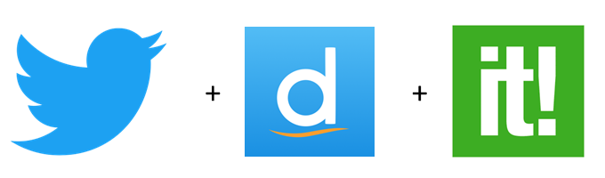

Pour commencer, il a fallu se familiariser avec le sujet. Une porte d'entrée très efficace est de discuter avec des gens déjà en contact avec le thème. Ils sont en mesure d'orienter les premières recherches vers des sources actives et fiables. Par ailleurs, commencer à lire quelques articles et posts sur les réseaux sociaux permet de découvrir le jargon spécifique qui rétrécit drastiquement le volume de contenu non pertinent.
Par conséquent, je me suis tourné vers les tuteurs du projet de recherche auquel je participe en parallèle de cette activité de veille sur le même thème. Ils m'ont directement orienté sur des publications et des institutions reconnues dans le domaine ce qui a facilité énormément le ciblage. Chercher des synonymes et des définitions aux termes du sujet est aussi un bon moyen pour trouver des mots-clefs.
Dans la mesure où beaucoup de contenu sera diffusé dans d'autres langues, en particulier en anglais, il ne faut surtout pas oublier de rajotuer les traductions des termes que l'on choisit. Pour cela, il existe évidemment des dictionnaires physiques et numériques efficaces mais aussi des services de traduction fiables tels que
DeepL qui repose sur des réseaux de neuronnes et une bibliothèque massive d'exemples (DeepL est développé par l'équipe de
Linguee).
Une fois les bons mots-clefs déterminés, il faut passer à la mise en place de dispositifs de collecte. Dans la mesure où j'étudie un thème de recherche, une partie significative de mes sources viendra de publications scientifiques. Dans la mesure om les sites qui les répertorient disposent généralement de flux RSS intégrés, il paraît naturel d'en profiter. Ainsi, je me suis abonné à des flux RSS et les ai agrégés dans des onglets à l'aide d'une extension navigateur :
Feedbro. L'agrégateur n'est pas nécessaire mais permet de classer les différents flux sans encombrer une boîte mail.
En parallèle, j'ai exploité la fonction "alerte" de Google Scholar qui permet d'envoyer des notifications, de manière similaire à un flux RSS, concernant la publication d'un document en rapport avec une requête. Cependant, ces alertes ne sont pas agrégables dans Feedbro, ce qui oblige de créer des filtres dédiés dans une boîte mail, voire de créer une adresse spécifique pour recevoir ces notifications.
Enfin, des posts sur des réseaux sociaux tels que Twitter peuvent accompagner la publication d'articles scientifiques. C'est dans cette optique que j'ai créé une liste Twitter dédiée aux comptes particulièrement actifs sur la problématique que je suis. La liste permet de créer un fil d'actualité isolé du fil global des abonnements Twitter sans pour autant créer un second profil. Cette fonctionnalité est extrêmement pratique car il se trouve qu'il n'est même pas obligatoire de suivre les comptes que l'on ajoute dans la liste et d'autres personnes travaillant sur les mêmes sujets peuvent avoir accès aux listes que l'on crée et suivre les veilleurs qui les intéressent. Toutefois, n'étant pas un utilisateur de Twitter en tant que réseau social personnel, je me suis créé un compte spécialement pour cette activité ce qui réduit quelque peu l'utilité des listes.
Afin d'exploiter toutes les fonctionnalités proposées par Twitter et de garder l'historique des requêtes soumises dans l'explorateur du site, il est possible de synchroniser son profil avec
TweetDeck. Ce service concatène plusieurs fils dans une disposition en colonnes. Cette disposition est complètement personnalisable et offre une vue d'ensemble sur le profil : résultats de recherche avancée mémorisés et actualisés, listes personnelles etc...
Dans le but d'archiver, de traiter et de diffuser les informations j'ai utilisé plusieurs moyens. Tout d'abord, la mise en place d'une page diigo permet de stocker les articles, posts et documents intéressants et surtout de les annoter pour faciliter l'exploitation ultérieure. Par ailleurs, la création d'un profil
Scoop.it permet la collecte de contenu (bien que beaucoup plus limitée en comparaison des outils présentés plus tôt) mais surtout la diffusion des résultats de la veille vers la communauté du site. J'ai également posté des tweets concernant les faits qui me paraissaient pertinents, en renseignant des hashtags adaptés, trouvés via
Hashtagify ainsi que le hashtag dédié à l'activité, proposé par les encadrants de l'école :
#vtecl.

Le dispositif de vielle peut se résumer sur le schéma ci-dessous où figure le circuit de l'information. Ce schéma permet aussi de mettre en exergue une caractéristique du processus de veille : il est itératif. En effet, il ne cesse d'évoluer en fonction de ce que l'on découvre et de notre propre activité. Ainsi, il est important de garder son système de veille toujours à jour.